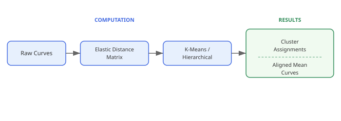
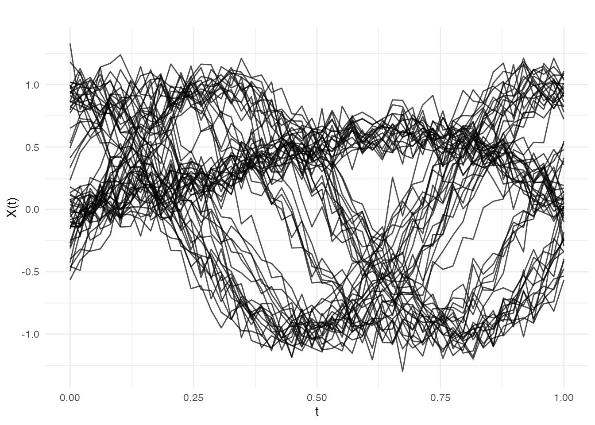
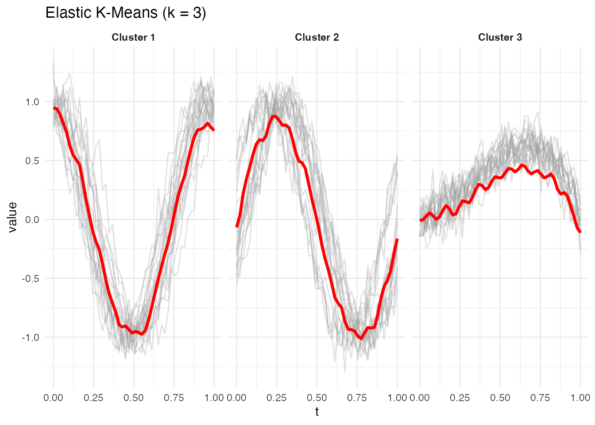
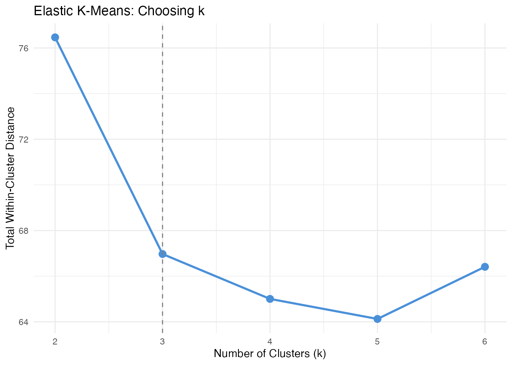
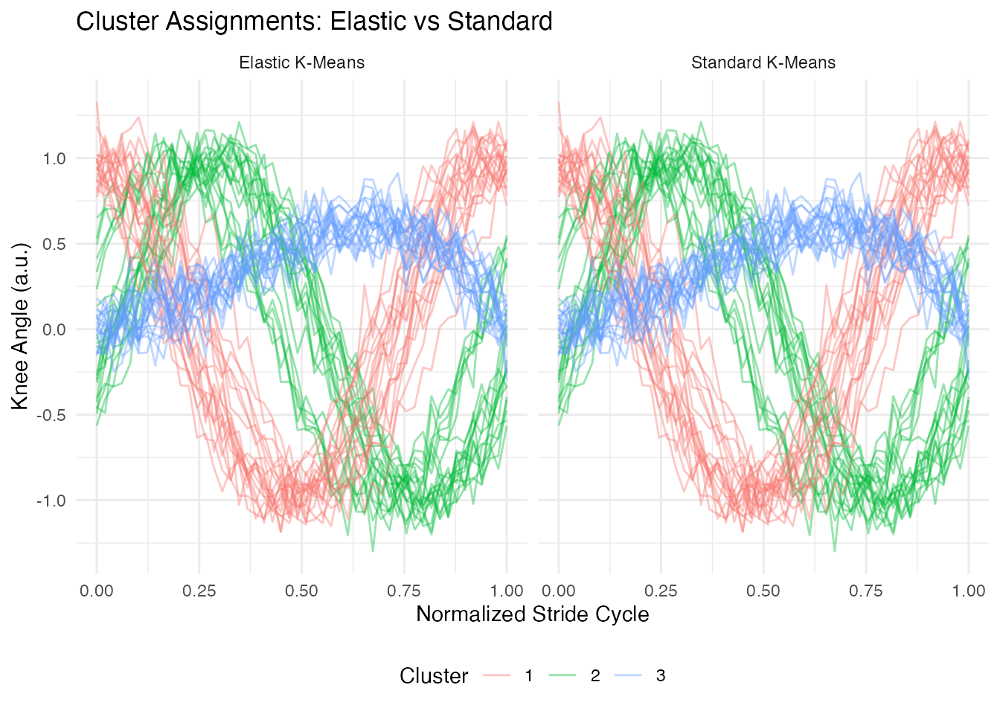

Introduction
Standard clustering methods like k-means use Euclidean (L2) distances to group curves. This works well when curves are aligned — but functional data often exhibits phase variation, where the same underlying pattern appears at different speeds or timings across observations. A peak that occurs early in one curve and late in another will inflate the Euclidean distance, even when the two curves have the same shape.
Elastic clustering solves this by replacing the Euclidean distance with the elastic (Fisher-Rao) distance, which factors out reparameterization before measuring dissimilarity. Cluster centers are computed as Karcher means in the elastic metric, so they represent the average shape of each group rather than a blurred pointwise average.

Simulated Gait Data
We simulate 60 knee-angle-like curves from three distinct movement patterns, each with random phase variation. Group 1 produces sinusoidal flexion–extension cycles, Group 2 produces cosine-shaped curves (shifted phase pattern), and Group 3 produces an asymmetric push-off profile. Within each group, curves share the same shape but are randomly retimed.
set.seed(42)
n_per_group <- 20
m <- 50
argvals <- seq(0, 1, length.out = m)
# 3 groups with different base patterns + phase variation
X <- matrix(0, 3 * n_per_group, m)
for (i in 1:n_per_group) {
phase_shift <- runif(1, -0.1, 0.1)
X[i, ] <- sin(2 * pi * (argvals + phase_shift)) + rnorm(m, sd = 0.1)
}
for (i in 1:n_per_group) {
phase_shift <- runif(1, -0.1, 0.1)
X[n_per_group + i, ] <- cos(2 * pi * (argvals + phase_shift)) +
rnorm(m, sd = 0.1)
}
for (i in 1:n_per_group) {
phase_shift <- runif(1, -0.1, 0.1)
X[2 * n_per_group + i, ] <- argvals^2 * (1 - argvals) * 4 +
rnorm(m, sd = 0.1) + phase_shift
}
fd <- fdata(X, argvals = argvals)
true_labels <- rep(1:3, each = n_per_group)
plot(fd, main = "Simulated Gait Curves (3 groups with phase variation)",
xlab = "Normalized Stride Cycle", ylab = "Knee Angle (a.u.)")
The three groups are visually distinct in shape, but the random timing shifts make pointwise comparison unreliable. This is exactly the scenario where elastic clustering outperforms standard methods.
Elastic K-Means
elastic.kmeans() partitions curves into k clusters using
the elastic distance. At each iteration, cluster centers are updated as
Karcher means — the curve that minimizes total squared elastic distance
to all members.
ekm <- elastic.kmeans(fd, k = 3, max.iter = 50, seed = 42)
print(ekm)
#> Elastic K-Means Clustering
#> Curves: 60 x 50 grid points
#> Clusters: 3
#> Iterations: 50
#> Converged: FALSE
#> Total within-cluster distance: 66.97
#> Cluster sizes: 20, 20, 20The built-in plot method shows each cluster’s mean curve (red) with member curves in the background:
plot(ekm)
Comparing to True Labels
table(Elastic = ekm$labels, True = true_labels)
#> True
#> Elastic 1 2 3
#> 1 0 20 0
#> 2 20 0 0
#> 3 0 0 20Elastic k-means recovers the three groups accurately despite the phase variation, because the elastic distance aligns curves before measuring dissimilarity.
Elastic Hierarchical Clustering
elastic.hclust() builds an agglomerative dendrogram
using pairwise elastic distances. It supports single, complete, and
average linkage. Unlike k-means, hierarchical clustering does not
require choosing k in advance — you can cut the dendrogram at any
level.
ehc <- elastic.hclust(fd, method = "complete")
print(ehc)
#> Elastic Hierarchical Clustering
#> Curves: 60 x 50 grid points
#> Method: complete
#> Merge steps: 59
plot(ehc)The dendrogram reveals the three-group structure as three
well-separated subtrees. Cut the tree with
elastic.cutree():
hc_labels <- elastic.cutree(ehc, k = 3)
table(Hierarchical = hc_labels, True = true_labels)
#> True
#> Hierarchical 1 2 3
#> 1 20 1 0
#> 2 0 19 0
#> 3 0 0 20Choosing k
When the true number of groups is unknown, compare within-cluster distances across several values of k. A sharp drop followed by a plateau suggests the right number of clusters.
k_range <- 2:6
within_dist <- numeric(length(k_range))
for (idx in seq_along(k_range)) {
fit <- elastic.kmeans(fd, k = k_range[idx], max.iter = 50, seed = 42)
within_dist[idx] <- fit$total.within.distance
}
df_k <- data.frame(k = k_range, total_within = within_dist)
ggplot(df_k, aes(x = .data$k, y = .data$total_within)) +
geom_line(linewidth = 1, color = "#4A90D9") +
geom_point(size = 3, color = "#4A90D9") +
geom_vline(xintercept = 3, linetype = "dashed", color = "grey50") +
labs(title = "Elastic K-Means: Choosing k",
x = "Number of Clusters (k)",
y = "Total Within-Cluster Distance") +
scale_x_continuous(breaks = k_range)
The elbow at k = 3 confirms three clusters. Beyond k = 3, splitting further does not substantially reduce within-cluster distance.
Comparison: Standard vs Elastic Clustering
To demonstrate the advantage of elastic clustering, we compare it to standard (Euclidean) k-means on the same data.
# Standard k-means (Euclidean)
km_std <- cluster.kmeans(fd, ncl = 3, metric = "L2", nstart = 10, seed = 42)
table(Standard = km_std$cluster, True = true_labels)
#> True
#> Standard 1 2 3
#> 1 0 20 0
#> 2 20 0 0
#> 3 0 0 20
# Build comparison data frame
n <- nrow(X)
df_compare <- data.frame(
curve_id = rep(rep(seq_len(n), each = m), 2),
argval = rep(rep(argvals, n), 2),
value = rep(as.vector(t(X)), 2),
cluster = factor(c(rep(ekm$labels, each = m),
rep(km_std$cluster, each = m))),
method = factor(rep(c("Elastic K-Means", "Standard K-Means"),
each = n * m))
)
ggplot(df_compare, aes(x = .data$argval, y = .data$value,
group = .data$curve_id, color = .data$cluster)) +
geom_line(alpha = 0.4) +
facet_wrap(~ .data$method) +
labs(title = "Cluster Assignments: Elastic vs Standard",
x = "Normalized Stride Cycle", y = "Knee Angle (a.u.)",
color = "Cluster") +
theme(legend.position = "bottom")
Elastic k-means assigns curves based on their underlying shape, grouping together curves that have the same pattern regardless of timing. Standard k-means is confused by the phase shifts and may mix groups or split a single shape pattern into multiple clusters.
Accuracy Summary
match_accuracy <- function(predicted, true_labels) {
# Try all label permutations for k = 3
perms <- list(c(1,2,3), c(1,3,2), c(2,1,3), c(2,3,1), c(3,1,2), c(3,2,1))
best <- 0
for (p in perms) {
matched <- sum(predicted == p[true_labels])
best <- max(best, matched)
}
best / length(true_labels)
}
cat("Elastic k-means accuracy:", match_accuracy(ekm$labels, true_labels), "\n")
#> Elastic k-means accuracy: 1
cat("Standard k-means accuracy:", match_accuracy(km_std$cluster, true_labels), "\n")
#> Standard k-means accuracy: 1Best Practices
- Use elastic clustering when phase variation is present. If curves are already well-aligned, standard clustering is faster and equally effective.
- Start with hierarchical clustering to explore the group structure without committing to a specific k.
- Compare linkage methods. Complete linkage tends to produce compact clusters; single linkage is better for elongated structures.
-
Check convergence. If
elastic.kmeans()reportsconverged = FALSE, increasemax.iterorkarcher.max.iter. -
Regularization. Set
lambda > 0to penalize extreme warpings when data is noisy.
See Also
-
vignette("articles/clustering")— standard functional clustering (k-means, fuzzy c-means, optimal k selection) -
vignette("articles/elastic-alignment")— elastic curve alignment and Karcher means -
vignette("articles/shape-analysis")— shape space analysis (orbit representatives, shape distances, shape means) -
vignette("articles/distance-metrics")— distance and semimetric measures for functional data
References
Srivastava, A. and Klassen, E. (2016). Functional and Shape Data Analysis. Springer.
Tucker, J.D., Wu, W. and Srivastava, A. (2013). Generative Models for Functional Data Using Phase and Amplitude Separation. Computational Statistics & Data Analysis, 61, 50–66.
Kurtek, S., Srivastava, A., Klassen, E. and Ding, Z. (2012). Statistical Modeling of Curves Using Shapes and Related Features. Journal of the American Statistical Association, 107(499), 1152–1165.